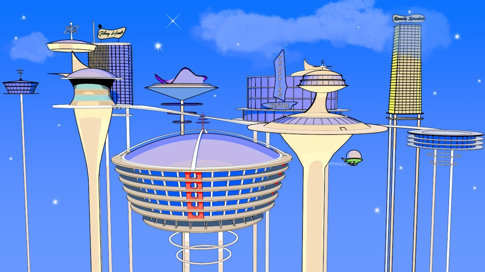

The Information Age
The Information Age

The information age is marked by the transition from analog to digital technologies, enabling unprecedented access to and sharing of information. This new age was heralded forth in the 1940s with the invention of the transistor at Bell Labs which in turn enabled the development of modern computers, smartphones, and the internet, ultimately ushering in the Information Age.
A Contemporary Driver of Innovation: Pixar Studios
I believe the pioneering and collaborative spirit of Bell Labs can be recognized in many organizations across the globe today, and one of my favorite examples is Pixar Studios. Pixar's history is studded with innovations in computer animation, such as rendering light refractions through water or hair's movement in wind, that exist due to the collaborative and experimental culture they foster. They had to invent solutions to the challenges they faced.
- Toy Story (1995) - First fully computer-animated feature film
- A Bug's Life (1998) - Subdivision surfaces creates smooth organic surfaces from polygons
- Toy Story 2 (1999) - Procedural cutting/slicing tools
- Finding Nemo (2003) - Water simulation and caustics and subsurface scattering
- The Incredibles (2004) - Cloth and fabric simulation
- Cars (2006) - Advanced texture and paint systems for realistic metal surfaces and reflections
- Brave (2012) - Hair simulation breakthrough, Merida's curly hair required entirely new simulation systems
What Will Propel Innovation in the Future?

A Destiny Told and Retold (...Again and Again)
Humans have long speculated that mankind's destiny lays in the stars, but time and time again we have been humbled by the reality that we have a whole lot more to figure out first. The Information Age, having spurred so much innovation, could finally take us to that long promised utopia depicted in works of fiction like Hanna-Barbera's The Jetsons, if the right innovators come together under the right conditions.
Picture a world where reaching space is as simple as boarding an elevator. A future pioneering innovator could be akin to a space elevator. Cheap and easy access to space will be paramount for future generations as the scope and complexity of orbital and space infrastructure grow ever more complex. We will need to haul enormous quantities of materials and equipment into space to support orbital construction and circumvent classic problems with getting to space like the famous "rocket equation" that limits how much mass can be launched into orbit. A space elevator, or inertial launcher could make such access routine & affordable, finally breaking the binds of rocket propulsion ushering in the true Space Age we have been promised for so long.
Conclusion
Just as Bell Labs turned an unknown problem into a world-changing invention, the hardest challenges today will be solved the same way, by teams that are allowed to experiment, argue, and iterate. That mindset shows up in modern places like Pixar, where technical breakthroughs weren't found in a vacuum, they were built in collaboration. If we want the next leap in space access, computing, and communications, the most important ingredient isn't a single genius. It's the culture that makes breakthroughs inevitable.
Works Cited
- Dye, Lee. "50 Years Ago, Information Age Began in Bell Labs." Los Angeles Times, 22 Dec. 1997, articles.latimes.com/1997/dec/22/business/fi-1177.
- Gertner, Jon. The Idea Factory: Bell Labs and the Great Age of American Innovation. Penguin Books, 2012.
- "Information Age." Wikipedia, Wikimedia Foundation, en.wikipedia.org/wiki/Information_Age. Accessed 30 Jan. 2026.
- Riordan, Michael, and Lillian Hoddeson. Crystal Fire: The Birth of the Information Age. W.W. Norton & Company, 1997.
- "Technology at Pixar." Pixar Animation Studios, www.pixar.com/technology-at-pixar. Accessed 30 Jan. 2026.